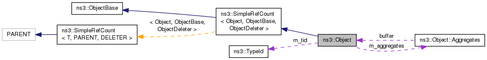

本章主要介绍NS-3的对象框架当中的智能指针。任何类实现了Ref()和Unref()两个方法，并且能够维护一个内部引用变量都可能成为智能指针，从而无需自己释放内存空间。NS-3对象框架当中，提供了SimpleRefCount来支持智能指针。任何想要使用智能指针的类，只需简单地实现SimpleRefCount即可。
NS-3对象框架概述
名称空间
所有NS-3的类都被放在ns3这个名称空间下。为了调用方便，我们自己写的类最好也放在这个名称空间下。在调用类的时候，直接使用using namespace ns3即可导入所有的类。
对象体系
NS-3的对象框架当中，有三个基类非常特殊，继承不同的基类，将得到不同的对象特性：
- SimpleRefCount：继承该类将得到智能指针特性
- ObjectBase：继承该类将得到NS-3的属性系统支持
- Object：继承自该对象相当于继承了上面两个对象，此外还支持聚合特性支持
根据对不同的特性的需求，我们需要继承不同的基类。例如，如果我们不需要属性系统和聚合特性的支持，我们就直接继承SimpleRefCount即可。NS-3自带的类中最经典的继承自SinpleRefCount的类是Packet（表示网络中的一个数据包）。NS-3自带的类中最经典的继承自ObjectBase的类是Tag（表示包中的标记）。而继承自Object的最经典的类是Node（表示网络中的一个节点，可以是主机也可以是中继节点）。
Object的继承关系，如下图所示：

SimpleRefCount和智能指针Ptr
C++的对象和内存管理机制相对比较复杂。即使是拥有很多年开发经验的程序员，也很容易在创建和释放内存时出现各种问题，从而导致内存泄漏。我们通常在学习C++的时候所写的程序都相对较小，而运行时间也不长。因此，我们能体会到出现内存泄露的危害也比较小。然而，在实际的仿真当中，需要创建大量的对象（例如，几百万个Packet对象），而运行时间也非常长（例如仿真要不间断运行一个月），因此如果出现对象的内存泄露，将使得程序运行效率非常低下，甚至造成系统内存耗尽而使得仿真异常终止。
NS-3提供了一套基于引用计数的智能指针系统，可以使得对象在不再被使用时自动被删除。这种机制不同于Java的垃圾回收机制，其主要使用一个垃圾回收线程来扫描垃圾对象（没有任何引用的对象），然后再删除。NS-3的智能指针简单地使用一个Ref()方法在有新的指针指向对象时，将其内部的计数加1；而在指针不再指向时调用UnRef()方法，将计数器减1。当计数器为0的时候，说明没有任何指针再指向该对象，那么说明对象不再被需要，从而可以直接删除。
为了实现这种自动计数的智能指针机制，NS-3使用了两个类：SimpleRefCount和Ptr。
Ptr
如果自己来维护Ref()和Unref()方法，需要自己判断什么时候指针指向对象，什么时候指针不再指向对象，将是非常复杂的，因此NS-3提供了一个Ptr类来代替传统的C++指针，从而帮助维护引用计数。如果一个类继承了SimpleRefCount或者自己实现了Ref()和Unref()两个方法，那么可以使用Ptr类，而不是传统指针来指向该类的任何实例。
Ptr的具体代码实现：
1 | template <typename T> |
从代码中可以看出，Acquire()方法主要功能就是在Ptr真的引用了一个对象的时候将计数加1。调用了Acquire()方法的其他方法，都可以认为是产生了新的指向，具体情况有五种：
- Ptr ()：默认无参构造函数，如果构造一个空的Ptr对象，那么其指向的对象为空。
- Ptr (T *ptr)：如果构造函数传入的参数是一个指针，那么将引用加1。
- Ptr (Ptr const&o)：拷贝构造函数，如果将一个Ptr对象复制了一次，那么引用加1。
- Ptr (Ptr const &o)：带类型转换的拷贝构造函数，如果将一个其他类型的Ptr对象复制了一次，那么引用也加1。
- operator = (Ptr const& o)：赋值的时候，相当于改变了引用的指向，原来引用的对象的计数要减1，新引用的对象的计数要加1。
这五个就是主要使得引用加1的例子。
调用了Unref()方法的函数就是让引用减1，具体情况有如下两种：
- ~Ptr ()：析构函数，当一个引用对象的Ptr被销毁的时候，说明指向少了一个
- operator = (Ptr const& o)：使用赋值的时候，如果不是将自己赋值给自己，那么就有可能产生引用的增减。原来引用的对象的的引用要减1，新引用的对象的计数要加1。
这两种情况基本涵盖了引用增加和减少的情况，当引用计数减为0的时候，对象将自动被销毁。然而，有些情况下，用户可能想自己维护引用的增减，不想让NS-3自动帮我们销毁对象。为此，Ptr类有一个特殊的构造函数，可以让用户在创建引用的时候，不产生任何的计数：
- Ptr (T *ptr, bool ref)：当构造函数的第二个参数为false时，将不再产生任何计数。此时用户可以自己维护对象的删除。
使用了Ptr之后，可以不用new操作符去创建对象，而使用NS-3提供的Create方法。该方法将自动调用构造函数，并且将创建的对象转换成Ptr对象返回。Ptr对象内部维护了一个指向具体对象的指针，并且重载了大部分常用的指针操作符，因此完全可以将Ptr对象当成一个传统指针使用。使用Ptr的时候为了明确是哪个类型的指针，Ptr提供了模板类型。因此使用Ptr的时候一般写法是：
1 | Ptr<SomeObject> obj = Create<SomeObject>(); //创建智能指针指向的对象 |
当Ptr对象销毁的时候，其内部维护的对象的计数器会自动减1。当没有任何一个Ptr再指向该对象时，该对象将被自动销毁。从而避免了内存泄露和用户自己维护对象生命周期的麻烦。
Ptr的例子
创建智能指针
要使用智能指针Ptr，维护的对象必须支持Ref和Unref两个方法。直接看如下的代码：
1 | /* -*- Mode:C++; c-file-style:"gnu"; indent-tabs-mode:nil; -*- */ |
运行该程序，输出结果如下：
1 | Waf: Entering directory `/home/rainsia/Applications/ns-allinone-3.27/ns-3.27/build' |
可以看出，Ptr基本上可以当做传统的指针使用，可以使用->操作符去正确调用任何的函数。当退出main函数的时候，所有main函数的局部变量都要被销毁，包括Ptr对象，因此Ptr对象的析构函数，会调用Unref()方法，将其引用计数减为0，随后销毁该对象。
通过外来指针构造智能指针
接下来，我们修改一下代码，不调用Create方法，而直接创建指针，然后再转换成Ptr对象：
1 | /* -*- Mode:C++; c-file-style:"gnu"; indent-tabs-mode:nil; -*- */ |
随后，运行程序，得到输出结果：
1 | Waf: Entering directory `/home/rainsia/Applications/ns-allinone-3.27/ns-3.27/build' |
从程序的运行过程可以看出，由于创建对象的时候，其基本计数已经为1，调用Ptr构造函数的时候，其引用计数将加1，因此计数为2。销毁Ptr对象的时候，引用计数减1，恢复为1，不满足销毁对象的条件，因此对象并没有被销毁。因此，如果对象不是通过Create()方法创建的，而是通过构造函数传入的，那么，将不会自动被销毁。其原因在于，NS-3认为这个对象开始并没有被智能指针维护，因此如果NS-3销毁了这个对象，可能会影响其他地方继续使用该对象，从而引起错误。因此，程序员应该自动维护该对象占用的空间。
从这个例子得出的结论是，要使用NS-3的智能指针，最方便的方法就是所有指针都通过NS-3的Create方法创建。然而，有些时候，无法通过NS-3的Create方法创建对象，例如，有些指针是第三方方法创建并返回的。在这种情况下，如果要让NS-3帮我们维护智能指针，我们可以使用另外一个Ptr的构造函数，传入参数false让Ptr不再增加引用计数。具体例子如下：
1 | …… |
这个例子跟上面一个相比，最大的区别就是调用Ptr的构造函数时，传入了第二个参数false。因此，构造函数不会对计数器加1。因此，可以让NS-3帮我们维护智能指针。其运行结果如下：
1 | Waf: Entering directory `/home/rainsia/Applications/ns-allinone-3.27/ns-3.27/build' |
由此可见，NS-3已经能够获得正确计数，并帮我们销毁了对象。
警告：然而需要注意的是，如果NS-3以智能指针的方式帮我们维护了一个外来的指针，那么这个智能指针的对象销毁之后，外来指针指向的对象也将无法继续使用。
智能指针的拷贝构造函数
前面已经提到，在调用Ptr的拷贝构造函数的时候，引用计数也会增加。下面我们来看一个具体的例子，将上面的例子稍作修改：
1 | /* -*- Mode:C++; c-file-style:"gnu"; indent-tabs-mode:nil; -*- */ |
我们通过调用UseObject，而传入Ptr
1 | Waf: Entering directory `/home/rainsia/Applications/ns-allinone-3.27/ns-3.27/build' |
从运行结果可以看出，在调用UseObject的时候。Ptr会被拷贝一次，从而调用了Acquire()方法，导致引用计数增加为2。在退出UseObject()方法的时候，其拷贝的参数obj将被销毁，从而导致引用计数降为1。
注意：记录函数调用的日志NS_LOG_FUNCTION()中，传入了一个PeekPointer(Ptr)的函数，表示在不增加引用计数的情况下，获取其真实的指针，以便输出地址。如果此处不获取指针，而是直接使用Ptr对象，由于NS_LOG_FUNCTION()宏实际上最终也是扩展成一个函数，因此也会调用一次Ptr的拷贝构造函数，从而引起引用计数被增加为3。有兴趣的读者可以自行修改尝试，我在此不再赘述。
回顾：总体来说，在C++中，有三种情况会调用拷贝构造函数：
- 一个对象以值传递的方式传入函数体
- 一个对象以值传递的方式从函数返回
- 一个对象需要通过另外一个对象进行初始化
其中第一种情况就是我们例子中的情况，情况二和情况一非常类类似，但是是以返回值的形式存在的。第三种情况很容易和赋值操作符混淆，接下来我们和赋值操作符一起分析第三种情况。
智能指针的赋值操作符重载
在C++中，将一个对象赋值给另外一个对象，可能会调用拷贝构造函数，也可能会调用赋值操作符重载函数。究竟执行的是哪一种，C++中有如下的规则：
对象在声明的同时将另一个已存在的对象赋给它，就会调用拷贝构造函数；
如果对象已经存在了，然后再将另一个已存在的对象赋给它，调用的就是重载赋值运算符。
我们通过下面的例子来解释这两句话的意思：
1 | /* -*- Mode:C++; c-file-style:"gnu"; indent-tabs-mode:nil; -*- */ |
程序中，定义了一个类A，和A的构造函数和析构函数。除此之外，还重写了A的拷贝构造函数和A的赋值运算符。在程序中，首先创建了一个A对象a，然后使用a创建了对象b。然后使用两种不同的方式将b对象赋值给对象c。运行程序，得到运行结果如下：
1 | Waf: Entering directory `/home/rainsia/Applications/ns-allinone-3.27/ns-3.27/build' |
从运行结果中，可以看出：
- 创建A的对象a，调用了构造函数
- 创建A的对象b，调用了拷贝构造函数
- 使用第一种方式赋值，调用了拷贝构造函数。这就是上面引用中第一句话的意思：在申明c的同时赋值，将调用拷贝构造函数
- 使用第二种方式赋值，调用了赋值运算符重载。这就是上面引用中第二句话的意思：在c已经存在的情况下赋值，将调用赋值运算符
- 系统中一共只有3个A的对象，因为第二次调用赋值运算时，并没有生成新的对象
当然，如果使用了NS-3的智能指针，那么使用第一种赋值方式，仅会让b对象的引用计数加一；而使用第二种赋值方式，会先让原c对象的引用计数减1（因为原来引用c对象的引用现在准备指向a了），然后让a对象的引用计数加1（因为现在多了一个引用c指向它）。
SimpleRefCount
如果理解了上面的例子，那么基本就理解了NS-3当中的智能指针的概念了。然而，每个类要使用智能指针的类都去自己实现Ref()和Unref()方法，并且维护自己的引用计数其，那么会非常繁琐，并无法体现智能指针方便的优势。基于面向对象的可重用性，NS-3提供了一个最简单的SimpleRefCount类，该类已经实现Ref()和Unref()方法，并且在内部维护了引用计数，可以和Ptr智能指针完美结合，比自己实现Ref和Unref方法更加安全可靠。
SimpleRefCount的实现
SimpleRefCount的实现代码如下：
1 | template <typename T, typename PARENT = empty, typename DELETER = DefaultDeleter<T> > |
和我们自己实现的代码类似地，其内部也有一个可变的私有变量m_count记录了当前指向该对象的指针数。当这个类刚被创建的时候，计数器为1，说明只有一个指针指向了该类。调用Ref()方法，将计数其加1，而调用Unref()方法将对计数其减一，并且当计数等于0的时候，将删除该对象。除此之外SimpleRefCount还可以指定删除器(DELETER)，在绝大部分场景下，直接使用默认删除器即可（缺省情况下就是使用默认删除器）。
SimpleRefCount使用的例子
下面的例子演示了如何使用SimpleRefCount来配合Ptr实现智能指针功能。
1 | /* -*- Mode:C++; c-file-style:"gnu"; indent-tabs-mode:nil; -*- */ |
和之前的例子相同，程序还是使用智能指针Ptr来引用SelfRefObject，然而此时SelfRefObject直接继承自SimpleRefObject，而无需自己实现Ref()和Unref()方法。值得注意的是，由于SimpleRefObject是一个模板类，因此必须在使用时指定其模板类型。本例子中模板是SelfRefObject。此外，要想获得对象内部的引用计数，可以直接调用SimpleRefObject提供的GetReferenceCount()方法。
运行上面的程序，可以得到如下的执行结果：
1 | Waf: Entering directory `/home/rainsia/Applications/ns-allinone-3.27/ns-3.27/build' |
可以看出，当退出main函数时，由于Ptr对象被销毁，引起引用计数降低为0，从而引起Ptr所维护的对象SelfRefObject被销毁。使用SimpleRefCount达到了同样的效果，而无需自己维护引用计数。